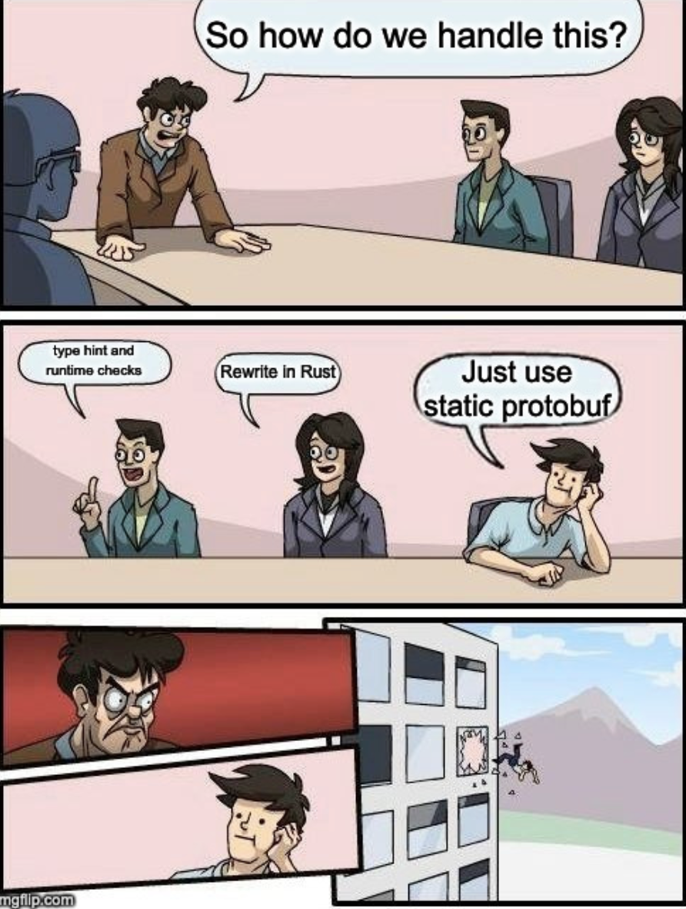

- Two parts: messages and services.
- Messages are just structs/classes defining the schema, if you squint.
- Services are bundles of RPCs—input a message, get one back. Think Django viewsets, but less painful.
- At runtime, protobuf skips the string drama and goes straight to binary.
- Auto-generates server and client code, like serializers or Pydantic models, but smarter.
- Paves the way for standardized SDKs that won’t break on a whim.
